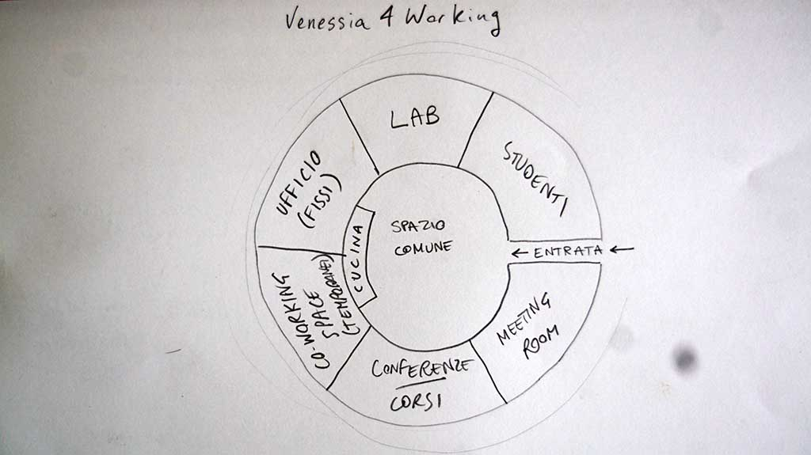
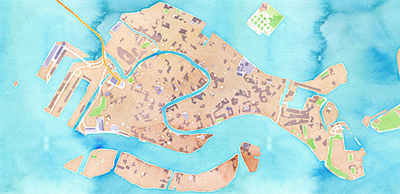
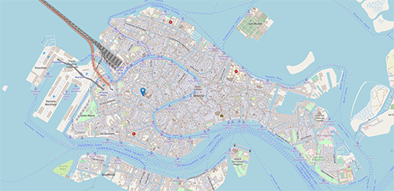
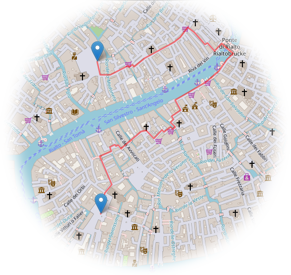

GLI ULTIMI SUPERSTITI DI VENEZIA
Forse non siamo in grado di ridurre l'impatto ecologico di una passeggiata, ma crediamo ancora di poter invadere, dal momento che tutto è finto. Se state guardando questo sito dal telefono, nulla funzionerà, e forse è meglio così. Pazienza. Se state usando questo sito da un computer, magari usando un browser opensource invece di google chrome, avete tutta la nostra ammirazione. Se avete bisogno di cercare un civico che google maps non trova o inviare un mazzo di fiori alla vostra amata con un trasporto ecologico (a impatto zero), storico, tradizionale, economico (beh anche gratis non può essere, per chi ci avete preso, suvvia non siate taccagni), abbiamo la soluzione per voi!
Per il nostro progetto ci appelliamo agli ultimi superstiti veneziani - gli unici rimasti anche dopo il coronavirus, per esempio. E includiamo anche tutti gli amanti di venezia e chi ha intenzione a viverci, il luogo di nascita non si può scegliere ma quello dove si vive si può.
Purtroppo siamo giovani, abbiamo perso da tempo la capacità di interagire con le persone, uscire in strada e fare cose davvero, siamo solo capaci a stare seduti dietro un computer tutto il giorno.
Ma a volte non tutto il male viene per nuocere, e visto anche il lockdown che ha costretto tutti a vivere in questo modo, abbiamo finalmente del tempo libero per i nostri progetti utopici, quindi proviamo a spiegarvi quello che vogliamo fare.
La nostra idea vuole svilupparsi modularmente, riuscendo a creare un sistema flessibile che si può adattare a diverse circostanze, aiutando chi vive. Qui sotto proviamo a mostrarvi cosa che abbiamo pensato. Dateci un'occhiata!
LE TRE CATEGORIE SONO INTERATTIVE: CLICCATE SU OGNUNA PER VEDERE I DETTAGLI!
Vivere a Venezia!
Innovazione Digitale
Educazione
Tradizioni
Tempistiche

Aldila del mio bellissimo disegno, l'idea di base comprende uno spazio che abbia:- Un'ufficio per noi e per chi altro vuole lavorare con noi o comunque lavorare la fisso
- Uno spazio per chi ha bisogno di lavorare a volte o chi vuole lavorare ai suoi progetti (cosiddetto co-working space)
- Una stanza per conferenze e corsi
- Un laboratorio per stampanti 3D, marchingegni, macchine CNC e tubi che si scaldano da soli
- Uno spazio per studenti (opzionale ma sarebbe bello) - tipo aula studio
- Uno spazio per meeting (per noi o per altra gente) in caso il tutto funzioni e la conferenza sia per conferenze piu grandi (meeting intendo piccoli gruppi) - (anche questo opzionale)
Mappa Geografica
Indirizzi
Punti di Interesse
Percorsi
In Barca
Segnalazioni
Comunità
Eventi
Corsi e Associazioni
Buon Vicinato
IL CUORE DI VENEZIA
Una mappa geografica può essere uno strumento non solo bellissimo, ma anche incredibilmente potente. Non ci credete? Date un'occhiata ai prossimi livelli!
SESTIERE, CAMPO, SALIZADA O SOTTOPORTEGO?
Venezia è unica, come sappiamo. Una cosa che sembra semplice, spesso si rivela non esserlo. Come per esempio cercare un indirizzo, un campiello, una corte sconta, o quel campo vicino alla chiesa che adesso non mi viene in mente. Il modulo relativo agli indirizzi risolverà questo problema.
CHIESE, MUSEI, BAR, OSPEDALI
Ma come sappiamo, a volte per orientarci a Venezia si usano riferimenti. Anche questi possono essere aggiunti all'occorrenza, rendendo la nostra mappa sempre più completa. Tutte le mappe hanno i bar, direte, cosa c'è di speciale? E cosa dite a proposito dei cestini, le fontane aperte, o le chiese (diremo noi)?
QUARTA A DESTRA DOPO LA CHIESA, PRIMA A SINISTRA..
Una delle cose più difficili è spiegare una strada. Ponti, callette, svolte a destra e a manca, scorciatoie, buona notte. Ma il nostro modulo risolverà anche questo problema, portandoti a destinazione sano e salvo. Ogni metro c'è un ponte e tu hai un sacco di valigie, dici? Ma certo, abbiamo un'opzione per calcolare la strada con meno ponti possibile, non ti preoccupare. Ah, acqua alta? Ma certo, grazie a una ricostruzione tridimensionale della città possiamo calcolare in pochi millisecondi il percorso migliore per arrivare a destinazione asciutto. Brutto?
IO VADO IN BARCA
Ottimo, vero spirito veneziano. Certamente saprai già tutte le strade, lungi da noi sollevare questo dubbio. Ma le ordinanze? I sensi unici? La larghezza dei canali, i divieti di sosta, le bricole? Dai, forse anche tu puoi trovare qualcosa per te in questo modulo.
BRICOLE A TORXEO, E NISSUNI FA NIENTE

I cittadini si lamentano del comune, il comune si lamenta dei cittadini. Sempre colpa di qualcun altro, storia già sentita. Ma forse è arrivato il momento di venirci incontro? Questo modulo si basa sull'idea di creare una maniera semplice ed efficace per tutti i residenti di inviare segnalazioni, e per chi è responsabile di ricevere un'informazione in maniera rapida e precisa, evitando una grande confusione.
L'UNIONE FA LA FORZA

Ora come non mai, è chiaro che le situazioni di emergenza diventeranno sempre più normali. Che sia acqua alta o coronavirus, una piattaforma per l'organizzazione e la divisione dei compiti può essere di grande aiuto. Questo modulo punta ad aiutare lo sviluppo e l'organizzazione in caso di emergenze.
A VENEZIA NON C'E MAI NIENTE DA FARE!

O forse non hai cercato abbastanza? Non c'è problema che non possa essere risolto con una mappa, che funzioni come un calendario interattivo dove puoi vedere cosa sta succedendo e non perderti il prossimo aperiorto!
E SE VOLESSI USARLA COME PRIVATO?

Abbiamo pensato anche a te. Per piccole associazioni, volontariato, progetti, gruppi, corsi, e chi più ne ha più ne metta. Usando un account potrete creare eventi che saranno visibili solo dalle persone della vostra cerchia! Comodo, no?
QUESTIONE DI BUON VICINATO

Ultimo ma non in ordine di importanza, l'idea del buon vicinato torna di moda. Hai perso qualcosa, hai bisogno di qualcuno che ti presti il trapano senza doverlo comprare per installare uno scaffale, o semplicemente vuoi metterti a disposizione per aiutare il tuo vicino a portare fuori il cane o a fare la spesa? Questo modulo ti aiuta a vincere la timidezza e conoscere i tuoi vicini. Venezia è più bella se ci si vive per più di qualche giorno!
Particolarmente saremo in grado, almeno inizialmente, di provvedere supporto per discipline scientifiche e applicazioni digitali, successivamente sarebbe bello poter offrire corsi su temi umanistici, ambientali e simili.
Le persone in grado di dare questi corsi ci sono, e alcune le conosciamo. Sembrerebbe solo una questione di tempo il riuscire a far collaborare tutti.
- Programmazione
- Macchine Automatiche
- Vogare
- Intelligenza Artificiale
- Python
- Costruire una pagina web
- Come ottenere fondi europei
- Free Software
- Giochi da tavolo
- Corso accelerato per andare in barca per studenti
- Storia di Venezia
- Ecosistema Veneziano
- Tradizioni Veneziane
- Dialetto Veneziano
- Lingue
- Ecosostenibilita'
- Democrazia

L'idea qui sarebbe di usare le barche a remi come una volta per corti trasporti in centro citta. Rapido, economico, a impatto zero e simpatico. Non vorresti ricevere un mazzo di fiori o una pizza da asporto da una barca a remi?
Cosa vuol dire?
- Sviluppo Applicazioni, Piattaforme, Incontri Online, ecc.. - semplicemente quello che stiamo facendo adesso (mi sono accorto dopo che incontri online puo suonare ambiguo, ma pazienza poi lo cambiamo)
- Definizione del progetto - Chi, come, quando, perche? - definiamo esattamente cosa vogliamo fare, quali delle milioni di idee vogliamo davvero seguire, se vogliamo fare i milioni o fare qualcosa per gli altri, o entrambi, per i veneziani, per i turisti, insomma con calma mettiamo nero su bianco la nostra visione
- Preparazioni Documenti e Stesura Progetto - anche se noioso, se vogliamo avere finanziamenti, dobbiamo partecipare a questa farsa in cui si scrivono documenti di mille pagine in cui scriviamo come we make the world a better place con un sorriso. Insomma scrivere un documento che segua le linee guide per i bandi europei, e soprattutto capire a quali bandi o a quali autorita ci appelliamo.
- Ricerca Strutture Fisiche - Ci servira un posto dove stare, se torniamo! San Servolo? Quartiere generale in isola? in una chiesa come il falso incubatore della Giudecca? Posto dove la gente puo raggiungerci piu facilmente? Dove sono le strutture, chi ha spazio a venezia?
- Ricerca Partner e Collaborazioni - Ci servira l'aiuto di tutti, in piu molti hanno gia esperienza. Unive, Iuav, Ocio, Morion, Row Venice, ignoro chi, sarebbe bello iniziare a costruire una rete tra tanti enti di venezia per stimolare la collaborazione piuttosto che la concorrenza.
- Finalizzazione e partecipazione al bando - Prima o poi bisogna accettare quello che abbiamo fatto e inviarlo, sperando in una risposta positiva. Via il dente, via il dolore!